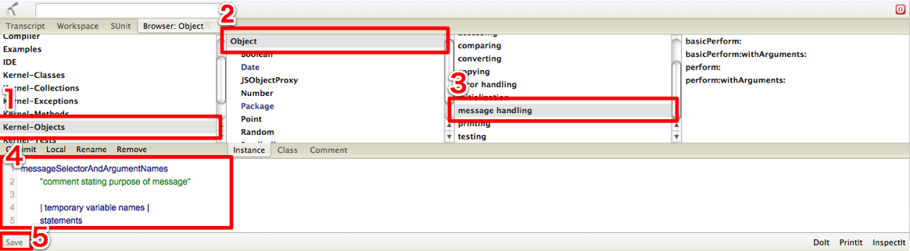
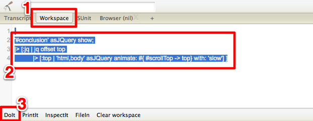

F#の素晴らしい発明のひとつである「パイプライン演算子」についてSmalltalkerにも分かりやすく説明します
この記事は F# Advent Calendar 2011 の5日目の記事です。 この記事は、F#入門と言っておきながら、 F#の細かい文法の説明はしません。 雰囲気だけ分かってもらえればと思います。
F#は関数型言語というジャンルに分類される言語であり、 関数を組み合わせてプログラムを構成します。 そのようなスタイルの場合、例えば、 引数xをfuncAに適用して、 その戻り値をfuncBに適用して、 その戻り値をfuncCに適用する というような記述が非常にしばしば現れます。
これを素直に書くと
let func x = funcC (funcB (funcA x))というような記述になりますが、funcA→funcB→funcCの順で実行されるのに、 記述順はfuncC、funcB、funcAの順となり分かりにくいですね。 変数束縛を使用して、
let func x = let t1 = funcA x let t2 = funcB t1 funcC t2のように書けば、処理順と記述順が合致しますが、 余計な一時変数が邪魔で読みにくいです。 t1がどこでどのように使われているかはt1のスコープ全体を確認しないと分かりません。
順次パイプライン演算子「|>」は、関数と引数の記述の順序を逆にします。 つまり、「func x」と「x |> func」は同じです。 |>を使えば、上記のコードをすっきり書くことが出来ます。
let func x = x |> funcA |> funcB |> funcC // 一行で書いた場合 let func x = x |> funcA |> funcB |> funcCパイプライン演算子を使ったことで、順番が直感的に分かりやすい上に、 戻り値を次の関数に渡しているという意図が明確です。 また、無駄な変数や括弧もなく見た目もすっきりしています。
パイプライン演算子の右辺は１引数関数のみを受け取ります。 F#では、2つの引数を持つ関数に対して、1つだけ引数を渡して 1引数の関数にすることができます。 1引数関数になれば、パイプライン演算子でつなげるようになります。 同様に3引数関数は2つの引数を渡せば、パイプライン演算子に渡せるわけです。 このように引数をひとつずつ渡せる関数をカリー化された関数と言います。
具体例を見てみましょう。 SmalltalkのCollection>>collect:は、F#ではSeq.map関数になります。 F#インタプリタ上でSeq.map関数の型を調べてみましょう。
> let func = Seq.map;;
val func : (('a -> 'b) -> seq<'a> -> seq<'b>)
^^^^^^^^^ ^^^^^^^ ^^^^^^
第１引数 第２引数 戻り値
第一引数としてa型の値をb型の値に変換する関数を、
第二引数としてa型のコレクションを渡すと、
戻り値としてb型のコレクションを返すという意味になります。
a型とかb型というのは、まだ未確定の何らかの型ということです。
Seq.mapに第一引数の関数だけを渡してみましょう。
> let func:seq<string> -> seq<int> = Seq.map String.length;; // Seq.mapに文字列の長さを返す関数(String.length)を渡す
val func : (seq<string> -> seq<int>)
^^^^^^^^^^^ ^^^^^^^^
第１引数 戻り値
文字列の長さを返す関数をSeq.map関数に渡したことで、 Stringのコレクションを受け取り、intのコレクションを返す関数になりました。 これなら、パイプライン演算子に渡すことが出来ます。
Seq.map以外のコレクション操作系関数もコレクションが最後の引数となっています。 パイプライン演算子と組み合わせると、下記のようにコレクション操作をきれいに記述できます。
[1 .. 10] // 1から10までのコレクションに対して、
|> Seq.filter (fun x -> x % 2 = 0) // 偶数だけ取り出して
|> Seq.map (fun x -> x * x) // 各要素を自乗して、
|> Seq.fold (sprintf "%s%03d") "" // 文字列として結合して、
|> printfn "%A" // 表示する("004016036064100"と表示される)
コレクションの関数のF#とSmalltalkの対応表は下記の通りです。
| F# | Smalltalk |
|---|---|
| Seq.map | Collection >> collect: |
| Seq.filter | Collection >> select: |
| Seq.fold | Collection >> inject:into: |
| Seq.iter | Collection >> do: |
ではSmalltalkでパイプライン演算子を実装してみましょう。 手元に手頃なSmalltalk環境がない人も心配は無用です。 このページを開いた時点で、Smalltalkは準備されています。 下のボタンをクリックしてください。
画面下部にSmalltalkのシステムブラウザが開きましたね? これはAmber Smalltalk というJavascriptによるSmalltalk実装です。 これでどこでもSmalltalkを試すことができます。 (スマートフォンで見てる方がいらしたら、ごめんなさい)
まず、Objectクラスをいじりましょう。 「Kernel-Objects」パッケージ(1)の「Object」クラス(2)の「message handling」プロトコル(3)をクリックしてください。  画面下部のエディタ部分(4)にメソッドのテンプレートが表示されますので、 下記のように書き換えます。
|> aBlock ^ aBlock value: self書き換えが終わったら、左下の「Save」ボタン(5)をクリックしてください。 これで|>演算子の実装は完了です。 Smalltalkにおけるパイプライン演算子の右辺は何であるべきか、 は議論の余地はありますが、 とりあえずF#と同じように1引数のブロックとしました。
正しく実装できたか、確認しましょう。 「Workspace」タブ(1)をクリックしてください。 
下記のコードをエディタ部分(2)に入力し、入力できたら、ドラッグやCtrl+Aなどでコードをすべて選択した状態で 「DoIt」(3)をクリックします。
'#conclusion' asJQuery
|> [:jq | jq show]
|> [:jq | jq offset top]
|> [:top | 'html,body' asJQuery animate: (< {scrollTop: top}>) with: 'slow']
<と>で囲うことで、部分的にJavascriptで記述できます。 Amber側で生成したDictionaryをjQueryに渡すと、うまく動かなかったので、このような対処をしています。
次のF# Advent Calendarは「しょうちゃん」こと@htid46です。